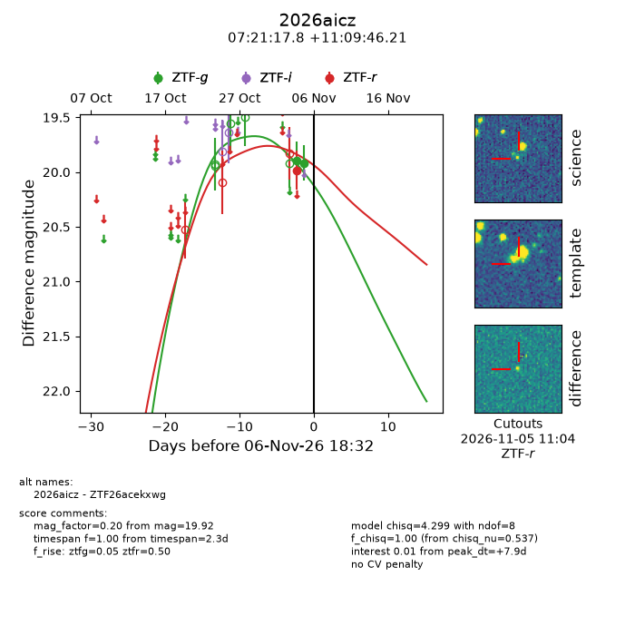
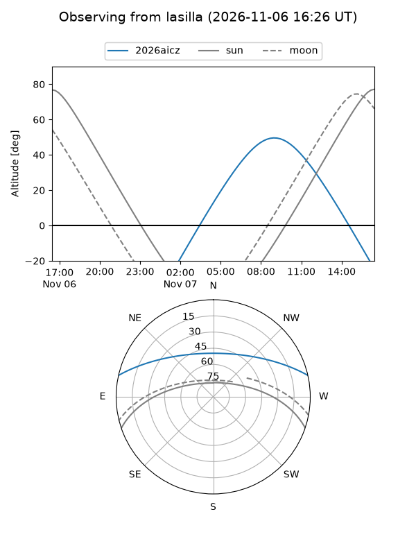
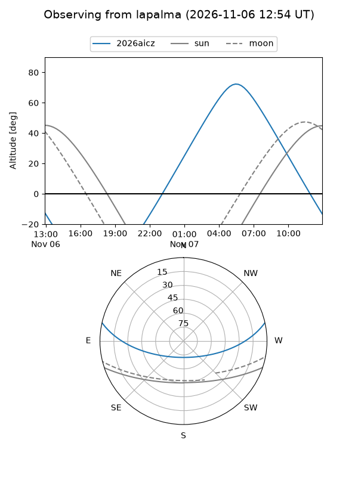
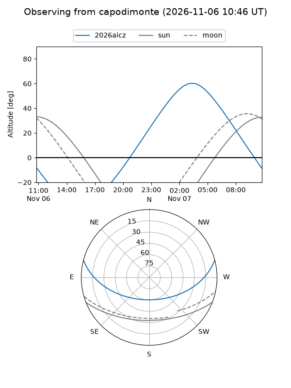
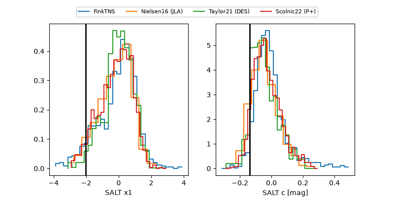

2026aicz
Target 2026aicz at 2026-11-06 18:34
Aliases and brokers:
FINK-ZTF: ztf.fink-portal.org/ZTF26acekxwg
Lasair-ZTF: lasair-ztf.lsst.ac.uk/objects/ZTF26acekxwg
ALeRCE-ZTF: alerce.online/object/ZTF26acekxwg
YSE-PZ: ziggy.ucolick.org/yse/transient_detail/2026aicz
TNS name: wis-tns.org/object/2026aicz
Direct TNS query: direct search
alt names
ZTF26acekxwg (ztf,fink_ztf)
2026aicz (tns,yse)
Coordinates:
equatorial (ra, dec) = 110.3243,+11.16284
equatorial (HMS+DMS) = 07:21:17.84,+11:09:46.21
galactic (l, b) = (206.2374,+11.63731)
Flags:
peak dt: +7.9
Photometry:
last ztfg=19.92, ztfr=19.99
2 ztfg, 1 ztfr detections
Lightcurve

Visibility



Additional plots
